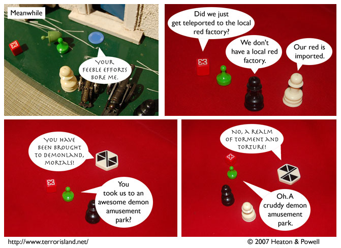

Strip #179
— Friday, August 3, 2007
You must be this possessed to ride.
Notes, Thoughts, &c.
Ben’s Notes
The red landscape of Demonland in this strip was generously provided by Jon Bragg of Davis, CA. Thanks for reading, Jon, and for letting me take pictures of gamepieces on your sweater!
Lewis’s Notes
I hope this answers everyone’s questions about whether non-demons have alternate forms in Demonland.
You know what else? Everyone should read this awesome comic.